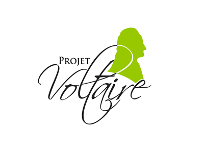
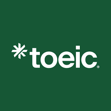
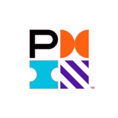
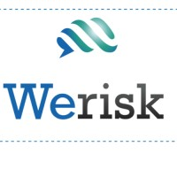
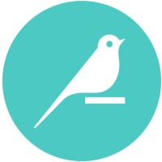
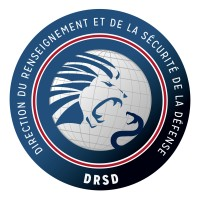

education
professional
DOCTOLIB
sept 2024 - janv 2025
Doctolib
IT Engineer Intern
→ development of an internal monitoring tool POC
→ IT support
→ maintenance and technical assistance
→ roadmap development
→ feature testing and requests (Dust)
→ IT support
→ maintenance and technical assistance
→ roadmap development
→ feature testing and requests (Dust)
TLFM
july 2022 - aug 2022
TLFM
Frontend dev
→ UX design to improve brand identity guidelines
→ R&D development of anti-fraud solutions
→ maintenance and technical assistance
→ website wireframe
→ R&D development of anti-fraud solutions
→ maintenance and technical assistance
→ website wireframe
Anar Paris
may 2024 - june 2024
Anar Paris
Versatile team member
→ food preparation & attention to detail
→ restaurant hygiene & food safety
→ independant thinking & communication
→ adaptability & organizational skills
→ cash handling & cultural awareness
→ restaurant hygiene & food safety
→ independant thinking & communication
→ adaptability & organizational skills
→ cash handling & cultural awareness
educational background
2021 - 2026
EPITA
Master 2 Global IT Management & Entrepreneurship Program
entrepreneurship track :
→ market - product
→ design thinking - empathy - definition - ideation - prototyping - testing
→ market - product
→ design thinking - empathy - definition - ideation - prototyping - testing
july 2025
Cambridge University
Learning AI Through Visualization
→ general view over AI-related problems
→ optimization
→ machine learning (linear regression)
→ deep learning
→ language models & neural network based approaches
→ LLMs & GenAI overview
→ optimization
→ machine learning (linear regression)
→ deep learning
→ language models & neural network based approaches
→ LLMs & GenAI overview
july 2025
Article 1
Bootcamp Leadership
→ self assessment & personal branding
→ inclusive leadership
→ active listening & communication
→ team collaboration & cultural competency
→ emotional intelligence & strategic planning
→ goal setting & public speaking
→ inclusive leadership
→ active listening & communication
→ team collaboration & cultural competency
→ emotional intelligence & strategic planning
→ goal setting & public speaking
2017 - 2020
Lucie Aubrac Comprehensive High Schoool
Scientific Baccalaureate with Engineering Sciences Specialization
→ summa cum laude (Highest Honors)
→ holography study as final year project
→ holography study as final year project
july 2019
L'X Polytechnique
Science Camp
→ problem-solving skills
→ mathematics
→ various sports activities
→ mathematics
→ various sports activities
certifications

projet voltaire
Professional French certification. Mastery of spelling, grammar and written expression.
Score : C2 - Advanced Level

toeic
Standardized test measuring English listening and reading skills in professional environments.
Score : 900/990 - Advanced Level
anssi secnum academy
ANSSI's cybersecurity excellence program for training information systems security experts.
inrs prévention sup'
French National Institute for Occupational Safety and Health - Higher Education Prevention Program

project management fundamentals
Project Management Fundamentals: Core principles and methodologies for planning, executing, and delivering successful projects.

workplace first aid certification
First Aid at Work: Emergency response training for workplace accidents and health incidents.
art explora sorbonne university
Cultural program exploring art history, museum studies, and creative industries in partnership with Sorbonne University.
create and use analytics reports w/ power bi
Create and use analytics reports with Power BI: Data visualization and business intelligence training for creating interactive dashboards and analytical reports.
view certificate →

core designer & ML practitioner
→ Dataiku Core Designer: Data science platform training for building end-to-end data pipelines and analytics workflows.
→ Dataiku ML Practitioner: Machine learning certification for developing, deploying, and monitoring ML models in production.
view certificate (core designer) →
view certificate (ml practitioner) →
→ Dataiku ML Practitioner: Machine learning certification for developing, deploying, and monitoring ML models in production.

drsd protection of national defense secrets
Training on handling and safeguarding classified defense information and security protocols.
cybersecurity & data
IBM training program covering cybersecurity fundamentals, data protection, and enterprise security solutions.
learning ai through visualization
Columbia University program exploring artificial intelligence concepts through visual and interactive learning methods.
view certificate →
environmental emergency response training
CNRS training program on environmental awareness and ecological emergency response for planetary protection.
view certificate →
community service
❤️
Article 1
mentee
2021 - present
🌱
Epi'Delices
chairwoman & secretary general
2024 - present
👩🏫
BecomTech
ambassador
2018 - present
🎓
Prologin
volunteer
2022 - present